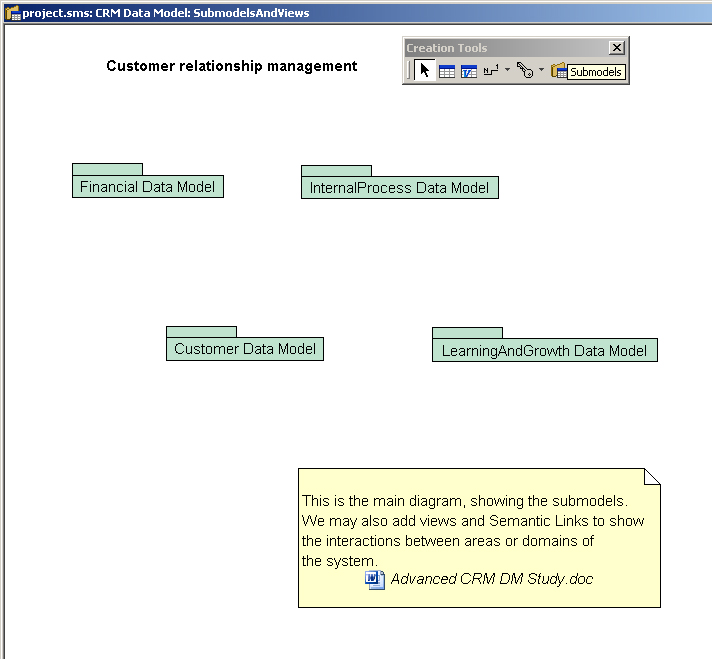

Les
sous-modèles
La
sous-modélisation est une façon hiérarchique d'organiser
l'information supportée par des références d'objet
appelées liens hiérarchiques.
Comme
vous le savez, la modélisation hiérarchique peut servir dans
plusieurs situations (logique/physique, transformation, conception d'interface,
gestion de version, etc). La sous-modélisation est employée
avec des modèles conceptuels de données et des modèles relationnels
de données seulement.
On
recommande d'utiliser la sous-modélisation seulement quand le contenu
du sous-modèle d'information sémantique diffère du
super-modèle. Quand l'information sémantique est la même
et qu’une "visualisation" différente de l'information est exigée,
un diagramme devrait être employé.
La
création d'un sous-modèle de données
La
fonction de sous-modélisation est intégrée avec les
opérations copier et coller afin qu'il soit très facile d'ajouter
un nouveau sous-modèle. Ajoutez simplement un nouveau modèle
de données dans un modèle existant, choisissez les objets
que vous voulez dans le super-modèle et collez-les dans le sous-modèle.
Les liens hiérarchiques des objets sont automatiquement créés.
Objets
liés hiérarchiquement
Il
y a trois façons de créer des liens hiérarchiques
:
-
En
collant un objet du super-modèle au sous-modèle, des liens
hiérarchiques sont automatiquement créés.
-
En
intégrant un super-modèle et un sous-modèle, l'association
d'objets entre ces modèles créera des liens hiérarchiques.
-
En
éditant les propriétés d'un objet, vous avez accès
à son super-objet. Vous pouvez éditer cet objet et choisir
un autre super-objet disponible, s'il a le même type et n'a pas déjà
de sous-objet dans le même modèle de données.
Options
graphiques du diagramme
Les
préfixes sur les concepts de table, de vue et de colonne peuvent
afficher les liens hiérarchiques des super ou sous-modèles.

Représentation
graphique des sous-modèles
La
représentation graphique des sous-modèles vous permet de
visualiser l'organisation hiérarchique de la modélisation
Dans l'exemple plus bas, le système a été divisé
en plusieurs sous-modèles. Ces sous-modèles peuvent alors
être liés à des systèmes-cibles différents.
Par exemple, le sous-modèle Customer Data Model pourrait
être implanté sous forme d'une base de données Oracle,
alors que InternalProcess Data Model pourrait l'être avec
Microsoft SQL Server et être déployé avec Windows Cluster.
